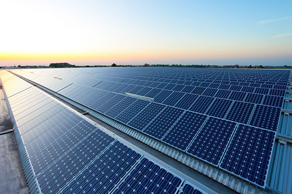
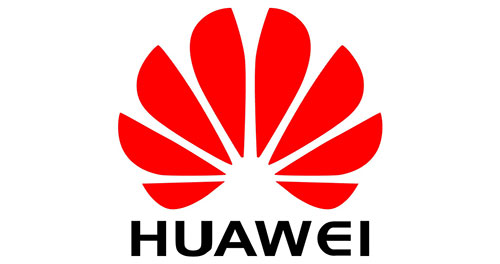

Tech
Samsung wants to be using 100 percent renewable energy by 2020

Good news, planet Earth. Samsung, the Korean electronics behemoth, said Thursday that it's committed to transitioning its existing facilities, offices and factories across US, Europe and China to 100 percent renewable energy sources within two years.
In Korea, the company is preparing to turn its Digital City headquarters into a solar panel paradise, installing 42,000 square metres worth of panels across its home turf. That's roughly six football fields worth of sun-catching, energy-producing goodness right there.
In addition, it will install solar arrays and generate geothermal power at Pyeongtaek campus and Hwaseong campus by 2020.
"As demonstrated by our expanded commitment, we are focused on protecting our planet and are doing our part as a global environmental steward," said Executive Vice President Won Kyong Kim.
Samsung will also be approaching partners in its supply chain, working with the top 100 companies to help it set and achieve its own renewable energy targets. It will also look to join the Carbon Disclosure Project Supply Chain Program, which helps companies monitor and manage their impact on the environment, next year.
In April, rival smartphone giant Apple said that all of its facilities, retail stores, offices and data centres around the world now use 100 percent renewable energy. This seems like a little bit of a catch up for Samsung and comes not too long after Apple really ramped up its advertising campaign regarding climate change and producing phones built using 100 percent renewable energy.
We can expect to hear more about Samsung's renewable energy plans on June 15, when its 2018 "Electronics Sustainability Report" is released.
Huawei knocks off Apple to become No. 2 smartphone seller

Huawei overtook Apple in the second quarter of 2018 to become the world's second largest smartphone vendor, according to new market research.
The embattled Chinese phone maker shipped 54 million handsets in the quarter, an increase of 41 percent over last year, researcher Canalys reported Tuesday. Its success was due in part to strong demand for its flagship P20 handset and its Honor sub-brand, the researcher said.
Samsung retained the smartphone crown but lost ground to upstart Huawei by shipping 73 million units, an 8 percent decline year over year. Apple slipped to No. 3, shipping 41 million units with a growth rate of 1 percent.
"Huawei's strategy has evolved significantly over the last six months," Canalys analyst Mo Jia said in a statement. "Despite its failure to strike a US carrier partnership earlier this year, the company has turned around quickly, moving away from its drive for profitability and focusing instead on finding volume growth at the low end."
Market researcher IDC reported similar numbers for smartphone shipments. It also said Tuesday that Apple could surge in the coming months with the expected introduction of new iPhone models.
"It is worth noting that Apple moved into the top position each of the last two holiday quarters following its product refresh, so it's likely we'll see continued movement among the top ranked companies in 2018 and beyond," said Ryan Reith, an IDC vice president, in a statement.
The milestone is a bright spot in an otherwise difficult year for Huawei. The company, which makes carrier networking equipment in addition to phones, has come under fire from the heads of the CIA, the FBI and the National Security Agency. During open Congressional testimony in February those officials advised Americans not to purchase or use Huawei products and services out of worries that they're used to spy.
In January, AT&T pulled out of a landmark plan to sell the Mate 10 Pro, an important high-end Huawei phone. Verizon reportedly also scuttled a deal to carry the device, based on political pressure.
MySpace turns 15: Looking back at a pre-Facebook world

Fifteen years ago, on Aug. 1, 2003, a man named Tom Anderson launched one of the most popular social networking sites of its time. Known as MySpace, it went on to earn $800 million in revenue and generated 4.3 billion daily page views in 2008. Eventually, the site would be usurped by Facebook as the largest social networking platform, but from about 2005 to 2009, MySpace was the place to be on the internet.
The site featured easy customization options for profile pages, a place to blog your daily thoughts, and a section to list your top MySpace friends. Besides from automatically adding MySpace co-founder "Tom" as your first friend, the site was also known for its music industry presence, where you could follow your favorite bands, listen to their latest singles and see where they were touring next.
On its fifteenth anniversary, CNET editors take a look back at our time spent wasting away on MySpace. It was the days before Facebook and iPhones really took off -- when many of us were just getting acquainted with social media in its most modern and awkward incarnation.